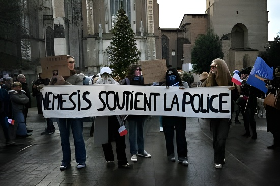

Le 16 mai 2026, lors du rassemblement « Unite the Kingdom, Unite the West » organisé par l'activiste d'extrême droite britannique Tommy Robinson à Parliament Square, trois membres du Collectif Némésis — groupuscule féministe identitaire français fondé par Alice Cordier — ont pris la parole sur scène vêtues de niqabs avant de les arracher sous les acclamations de la foule. Ce coup médiatique a propulsé le collectif sur la scène internationale et cristallisé les débats sur la montée d'un fémino-nationalisme d'extrême droite transnational.
Le 16 mai 2026 s'inscrit dans un calendrier politique particulièrement tendu. Une semaine plus tôt, les élections locales du 7 mai avaient vu Reform UK — parti populiste de droite de Nigel Farage — réaliser une percée historique en remportant plus de 1 400 sièges de conseillers, tandis que le gouvernement Starmer s'effondrait. La marche « Unite the Kingdom, Unite the West » organisée par Tommy Robinson (de son vrai nom Stephen Yaxley-Lennon) s'est tenue dans ce contexte de déstabilisation du système politique traditionnel britannique. Il s'agissait du second grand rassemblement d'extrême droite de ce type après celui de septembre 2025, qui avait réuni jusqu'à 150 000 personnes et dégénéré en affrontements avec la police.
Le gouvernement avait, en amont, interdit l'entrée sur le territoire britannique à sept orateurs étrangers prévus pour prendre la parole lors de cet événement, au motif que leur présence « ne serait pas conducive au bien public ». Parmi eux figuraient l'activiste américaine Valentina Gomez, la commentatrice néerlandaise Eva Vlaardingerbroek, et le politicien belge Filip Dewinter. La journée était en outre marquée par la concomitance de trois grands événements londoniens : la marche pro-Palestine pour la Nakba, la finale de la FA Cup à Wembley, et la marche d'extrême droite — une configuration exceptionnelle de tensions dans l'espace public.
Le Collectif Némésis est une organisation politique française d'extrême droite réservée aux femmes de 18 à 30 ans, fondée en 2019 par Alice Cordier, de son vrai nom Alice Kerviel, née à Rennes en 1997. Se revendiquant « féministe » et « identitaire », le collectif s'est bâti autour d'un discours anti-immigration, anti-islam et ethno-nationaliste, en mobilisant un répertoire d'action inspiré des techniques de l'Action Française, mouvement royaliste d'extrême droite dans lequel Cordier s'est formée. Le collectif tire son nom de Némésis, déesse grecque de la vengeance, et se présente comme le défenseur des « femmes occidentales » et de la « civilisation européenne ».
Ses actions sont caractérisées par une logique de provocation médiatique soigneusement mise en scène : infiltration de marches féministes (NousToutes, Journée internationale des droits des femmes), port du niqab devant la tour Eiffel pour une campagne anti-hijab en 2021, interruption de réunions politiques de gauche. Alice Cordier dispose d'une audience importante sur les réseaux sociaux — 227 000 abonnés sur Instagram — et intervient régulièrement sur la chaîne d'information CNews. Le collectif entretient des liens documentés avec des figures du réseau d'extrême droite transnational incluant Tommy Robinson, Viktor Orbán et le mouvement MAGA américain.
Avant sa percée internationale à Londres, Némésis a été au cœur d'une grave crise en France. Le 12 février 2026, des membres du collectif avaient organisé une action de protestation devant l'Institut d'Études Politiques de Lyon contre une conférence de Rima Hassan, eurodéputée LFI et fondatrice d'Action Palestine France. Des militants d'extrême droite avaient été convoqués sur place pour assurer leur « protection ». Dans les affrontements qui s'en sont suivis avec des antifascistes, Quentin Deranque, un jeune militant néonazi de 23 ans, a été tué.
La mort de Deranque a provoqué une onde de choc en France : l'Assemblée nationale a observé une minute de silence en sa mémoire, la droite et l'extrême droite en ont fait un martyr. Lors d'une marche en son hommage à Lyon, des participants ont effectué des saluts nazis et scandé des slogans homophobes. Némésis a saisi politiquement le moment, amplifiant sa visibilité nationale et construisant le récit d'un collectif « seul contre le système ». C'est dans ce contexte de notoriété accrue que le collectif s'est tourné vers la scène internationale britannique.
La performance du 16 mai à Parliament Square a été méticuleusement orchestrée. Trois membres de Némésis, dont Alice Cordier, sont montées sur scène vêtues de niqabs et d'abayas. Faisant face à la foule, Cordier a entonné le cri « Take it off ! » — retirez-le —, que des dizaines de milliers de spectateurs ont repris en chœur. Une à une, les femmes ont arraché leurs voiles et vêtements, révélant des robes moulantes ornées de croix dorées, sous les acclamations du public. L'une d'entre elles a pris le micro : « Nous sommes venues de France pour vous soutenir. »
Cette mise en scène s'inscrit dans le répertoire classique de Némésis, qui instrumentalise le corps des femmes musulmanes pour véhiculer un message d'hostilité à l'islam. Des analystes comme la journaliste du Middle East Eye ont souligné la dimension doublement anti-féministe du geste : en invitant une foule à majorité masculine à crier « retirez-le » devant des femmes sur scène, Némésis a reproduit exactement la logique patriarcale et d'objectification sexuelle qu'elle prétend combattre chez les hommes musulmans. La croix brandie comme marqueur identitaire a achevé de définir la nature christiano-nationaliste du message.
Le rassemblement du 16 mai a suscité de vives réactions. Amnesty International UK, par la voix de sa directrice générale Kerry Moscogiuri, a déclaré que l'événement « apporte le racisme, la violence et la peur dans les rues de Londres ». Le Premier ministre Keir Starmer a qualifié la marche d'« exercice de haine déguisé en patriotisme ». Quarante-trois arrestations ont eu lieu lors de la journée. Sur les réseaux sociaux, le stunt du niqab a été abondamment commenté, avec des critiques pointant une double asymétrie : d'un côté, l'absence d'intervention policière face à des actes explicitement islamophobes ; de l'autre, un traitement jugé plus sévère réservé aux manifestants pro-palestiniens lors d'autres rassemblements.
Robinson, pour sa part, a encouragé ses partisans à s'engager dans les partis politiques existants — Reform UK en tête — en vue des prochaines législatives, signalant une stratégie de passage du mouvement de rue à la mobilisation électorale. Un sondage cité par plusieurs médias britanniques indique qu'un tiers des sympathisants de Reform UK se déclarent favorables à Tommy Robinson.
Affrontements à Lyon devant l'IEP lors d'une action de Némésis contre Rima Hassan. Mort de Quentin Deranque, 23 ans, militant néonazi.
Vague de soutien à Némésis en France : minute de silence à l'Assemblée nationale, marche en hommage à Deranque avec saluts nazis à Lyon. Cordier impliquée dans un autre scandale en mars.
Réunion à Paris « Make Europe Great Again » réunissant des nationalistes européens et des proches de Trump en vue du rassemblement londonien du 16 mai.
Élections locales : percée historique de Reform UK. Le gouvernement Starmer entre en crise. Cinq membres du Cabinet démissionnent dans la semaine suivante.
Rassemblement « Unite the Kingdom, Unite the West » à Parliament Square. 60 000 participants. Némésis monte sur scène en niqabs. 43 arrestations. Un violoncelliste se produit enveloppé de tranches de bacon, acte islamophobe largement condamné.
« Collectif Némésis claims to be a feminist group, but really what they exhibited at the Unite the Kingdom rally was their blatant support for Britain's misogynistic, patriarchal far-right movement. »
— The Canary, analyse publiée le 20 mai 2026L'irruption du Collectif Némésis sur la scène londonienne illustre une dynamique plus large : la transformation de mouvements d'extrême droite jusqu'alors marginaux en acteurs visibles d'un espace politique en recomposition. Au Royaume-Uni, l'ascension électorale de Reform UK, le fracas médiatique des marches de Tommy Robinson et la présence de collectifs étrangers comme Némésis forment un écosystème cohérent, renforcé par des réseaux transnationaux aux ressources croissantes. La performance islamophobe du 16 mai n'était pas un accident : c'était un message adressé simultanément aux communautés musulmanes britanniques, au gouvernement Starmer affaibli, et à l'opinion internationale. La question qui se pose désormais est celle de la réponse institutionnelle : jusqu'où la liberté de rassemblement peut-elle couvrir des actes relevant, selon leurs critiques, de l'incitation à la haine ?
On 16 May 2026, during the "Unite the Kingdom, Unite the West" rally organised by British far-right activist Tommy Robinson at Parliament Square, three members of Collectif Némésis — a French identitarian feminist group founded by Alice Cordier — took to the stage wearing niqabs before tearing them off to the crowd's roar. The stunt propelled the collective onto the international stage and crystallised debates about the rise of a transnational far-right femonationalism.
16 May 2026 took place against a highly charged political backdrop. A week earlier, the 7 May local elections had seen Reform UK — Nigel Farage's right-wing populist party — achieve a historic breakthrough, winning over 1,400 council seats while the Starmer government faced an existential crisis. The "Unite the Kingdom, Unite the West" rally organised by Tommy Robinson (real name Stephen Yaxley-Lennon) unfolded in this context of institutional destabilisation. It was the second major far-right gathering of its kind, following the September 2025 rally that drew up to 150,000 people and descended into clashes with police.
The government had pre-emptively banned seven foreign speakers from entering the UK on the grounds that their presence would not be "conducive to the public good." These included American activist Valentina Gomez, Dutch commentator Eva Vlaardingerbroek, and Belgian politician Filip Dewinter. The day was further complicated by the simultaneous presence of three major events in London: a pro-Palestine Nakba Day march, the FA Cup final at Wembley, and the far-right rally — an exceptional confluence of tensions in public space.
Collectif Némésis is a French far-right political organisation for women aged 18 to 30, founded in 2019 by Alice Cordier, born Alice Kerviel in Rennes in 1997. Describing itself as "feminist" and "identitarian", the collective is built around an anti-immigration, anti-Islam and ethno-nationalist discourse, using a repertoire of action directly inspired by Action Française, the monarchist far-right movement in which Cordier was trained. The collective takes its name from Nemesis, the Greek goddess of revenge, and presents itself as the defender of "western women" and "European civilisation".
Its actions are defined by a logic of carefully staged media provocation: infiltrating feminist marches, wearing a niqab at the Eiffel Tower to promote an anti-hijab day in 2021, and disrupting left-wing political events. Alice Cordier has a sizeable social media following — 227,000 Instagram subscribers — and appears weekly on news channel CNews. The collective has documented ties to figures within a transnational far-right network that includes Tommy Robinson, Viktor Orbán and the American MAGA movement.
Before its international breakthrough in London, Némésis had been at the centre of a serious crisis in France. On 12 February 2026, members of the collective had organised a protest outside the Institut d'Études Politiques in Lyon against a lecture by Rima Hassan, an LFI MEP and founder of Action Palestine France. Far-right militants had been summoned to provide "protection" for them. In the ensuing clashes with antifascists, Quentin Deranque, a 23-year-old neo-Nazi activist, was killed.
Deranque's death sent shockwaves through France: the National Assembly observed a minute of silence in his memory; the right and far-right cast him as a martyr. At a march in his honour in Lyon, participants performed Nazi salutes and chanted homophobic slogans. Némésis seized the political moment, amplifying its national visibility and crafting a narrative of a collective standing "alone against the system." It was against this backdrop of heightened notoriety that the collective turned its gaze towards the British international stage.
The 16 May performance at Parliament Square was meticulously choreographed. Three Némésis members, including Alice Cordier, took to the stage wearing niqabs and abayas. Facing the crowd, Cordier led the chant "Take it off!" — a cry that tens of thousands of spectators joined in. One by one, the women tore off their veils and garments, revealing body-con dresses adorned with gold crosses, to the crowd's ecstatic cheering. One then took the microphone: "We have come from France to support you."
This staging is textbook Némésis, which instrumentalises the bodies of Muslim women to convey a message of hostility towards Islam. Analysts have highlighted the doubly anti-feminist nature of the stunt: by inviting a predominantly male crowd to chant "take it off" at women on stage, Némésis reproduced exactly the patriarchal logic of objectification it claims to denounce in Muslim men. The cross brandished as an identity marker completed the christiano-nationalist framing of the message.
The 16 May rally drew sharp reactions. Amnesty International UK's chief executive Kerry Moscogiuri stated that the event "brings racism, violence and fear to the streets of London." Prime Minister Keir Starmer described the march as "an exercise in hate dressed up as patriotism." Forty-three arrests were made on the day. Online, the niqab stunt generated widespread commentary, with critics pointing to a perceived double standard: the absence of police intervention in the face of explicit Islamophobic acts, contrasted with what many described as harsher treatment of pro-Palestinian demonstrators at other events.
Robinson, for his part, encouraged his supporters to join existing political parties — Reform UK above all — ahead of the next general election, signalling a strategic shift from street mobilisation to electoral engagement. A poll cited by several British media outlets indicated that one in three Reform UK sympathisers said they supported Tommy Robinson.
Clashes in Lyon outside the IEP during a Némésis action against Rima Hassan. Death of Quentin Deranque, 23, a neo-Nazi activist.
Wave of support for Némésis in France: a minute's silence in the National Assembly, a memorial march for Deranque featuring Nazi salutes in Lyon. Cordier is implicated in a further scandal in March.
"Make Europe Great Again" closed-door meeting in Paris, gathering European nationalists and Trump allies in preparation for the 16 May London rally.
Local elections: historic Reform UK breakthrough. The Starmer government enters a leadership crisis. Five Cabinet members resign in the following week.
"Unite the Kingdom, Unite the West" rally at Parliament Square. 60,000 attendees. Némésis takes the stage in niqabs. 43 arrests. A cellist performs draped in raw bacon — a widely condemned act of Islamophobic provocation.
"Collectif Némésis claims to be a feminist group, but really what they exhibited at the Unite the Kingdom rally was their blatant support for Britain's misogynistic, patriarchal far-right movement."
— The Canary, analysis published 20 May 2026The eruption of Collectif Némésis onto the London stage illustrates a broader dynamic: the transformation of formerly marginal far-right movements into visible actors within a rapidly reconfiguring political space. In the United Kingdom, the electoral rise of Reform UK, the media spectacle of Tommy Robinson's marches, and the presence of foreign collectives like Némésis form a coherent ecosystem, reinforced by transnational networks with growing resources. The Islamophobic performance of 16 May was no accident: it was a message addressed simultaneously to British Muslim communities, to the weakened Starmer government, and to international public opinion. The question it raises is ultimately an institutional one — how far can freedom of assembly extend to cover acts which critics argue constitute incitement to hatred?